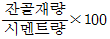
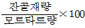
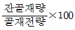
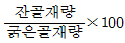

콘크리트기능사 (2003-10-05 기출문제)
1과목: 콘크리트재료
1. 콘크리트에 사용되는 굵은골재 및 잔골재를 구분하는데 기준이 되는 체의 공칭치수는?
- 5mm
- 10mm
- 2.5mm
- 1.2mm
(정답률: 92%)

2. 공기중 건조 상태에서 골재의 입자가 표면 건조 포화상태로 되기까지 흡수된 물의 양을 말하는 것은?
- 유효흡수량
- 흡수량
- 표면수량
- 함수량
(정답률: 65%)
3. 실적률이 큰 값을 갖는 골재를 사용한 콘크리트에 대한 설명으로 틀린 것은?
- 콘크리트의 밀도가 증대된다.
- 콘크리트의 수밀성이 증대된다.
- 콘크리트의 내구성이 증대된다.
- 건조수축이 크고 균열발생의 위험이 증대된다.
(정답률: 71%)
4. 잔골재율을 올바르게 설명한 것은?




(정답률: 60%)
5. 포장 콘크리트에서 황산 나트륨에 의한 안정성 시험을 할경우 조작을 5번 반복 했을때 굵은골재 손실 중량백분률의 한도는 일반적으로 얼마인가?
- 12%
- 16%
- 18%
- 25%
(정답률: 55%)
6. 산화철과 마그네시아의 함유량을 제한하여 철분이 거의 없으며, 주로 건축물의 미장, 장식용, 인조석 제조등에 사용되는 시멘트?
- 슬래그 시멘트
- 알루미나 시멘트
- 백색 포틀랜드 시멘트
- 조강 포틀랜드 시멘트
(정답률: 84%)
7. 플라이 애쉬 시멘트의 특징으로 부적당한 것은 다음중 어느 것인가?
- 장기강도는 보통 시멘트 보다 낮다.
- 건조 수축이 적다.
- 수화열이 적다.
- 화학적 저항성이 강하다.
(정답률: 54%)
8. 해중공사 또는 한중 콘크리트 공사에 사용하며 내화용콘크리트에 적합한 시멘트는?
- 알루미나 시멘트
- 고로 시멘트
- 보통포틀랜드 시멘트
- 실리카 시멘트
(정답률: 81%)
9. 보통 포오틀랜드 시멘트의 28일 강도는 조강 포오틀랜드 시멘트의 며칠 강도와 비슷한가?
- 3일
- 7일
- 14일
- 28일
(정답률: 56%)
10. 혼화재료중 일반적으로 사용량이 비교적 많은 혼화재로만 짝지어진 항은?
- AE제, 염화칼슘
- AE제, 플라이애쉬
- 고로슬래그 미분말, 염화칼슘
- 고로슬래그 미분말, 플라이애쉬
(정답률: 53%)
11. 다음 혼화재료중 콘크리트 워커빌리티를 개선하는 효과가 없는 것은?
- 응결경화촉진제
- AE제
- 플라이애쉬
- 시멘트 분산제
(정답률: 56%)
12. 다음 중 시멘트의 성분에 속하는 것은?
- A.E제
- 석고
- 염화칼슘
- 플라이애쉬
(정답률: 63%)
13. 질량백분율에 의한 굵은골재의 유해물 함유량 한도의 최대치를 나타낸 것으로 틀린 것은?
- 콘크리트의 외관이 중요한 경우 석탄, 갈탄 등으로 밀도 2.0g/cm3의 액체에 뜨는 것 : 0.5%
- 0.08mm체 통과량 : 1.0%
- 점토덩어리 : 2.5%
- 연한 석편 : 5.0%
(정답률: 47%)
14. 굵은 골재의 입자가 클때 콘크리트에 미치는 영향을 옳게 설명한 것은?
- 시멘트의 소모량이 많아진다.
- 재료가 분리되기 쉽다.
- 콘크리트가 완전히 혼합된다.
- 시공하기가 쉽다.
(정답률: 71%)
15. 굵은 골재의 최대치수, 잔골재율, 잔골재 입도, 반죽질기 등에 의한 마무리하기 쉬운 정도를 나타내는 굳지 않은 콘크리트의 성질을 뜻하는 것은?
- 반죽질기
- 워커빌리티
- 성형성
- 피니셔빌리티
(정답률: 53%)
16. 시멘트의 응결속도가 늦어지는 경우 그 이유로서 적당하지 못한 것은?
- 분말도가 높다.
- 수량(水量)이 많다.
- 온도가 낮다.
- 시멘트가 풍화 되었다.
(정답률: 42%)
17. AE제를 사용한 콘크리트의 특성에 맞지 않는 것은?
- 워커빌리티가 증가한다.
- 단위수량이 증가한다.
- 수밀성이 커진다.
- 내구성이 커진다.
(정답률: 75%)
18. 콘크리트속에 일반적으로 많이 사용되는 응결경화 촉진제는?
- 플라이애쉬
- 산화철
- 내황산염
- 염화칼슘
(정답률: 50%)
19. 블리딩에 대한 설명 중 잘못된 것은?
- 콘크리트를 친 뒤 물이 위로 올라오는 현상을 말한다
- 블리딩에 의하여 표면에 떠올라 가라앉은 아주 작은 물질을 레이턴스라 한다
- 블리딩이 커지면 콘크리트의 강도, 철근과의 부착력이 떨어진다
- 콘크리트를 덧치기할 때 레이턴스가 있는 상태에서 작업해도 좋다
(정답률: 77%)
20. 골재의 조립률은 골재 알의 지름이 클수록 크다. 콘크리트용 잔골재의 조립률은 어느정도가 좋은가?
- 2.3∼3.1
- 3.5∼5.6
- 6∼8
- 9∼12
(정답률: 78%)
2과목: 콘크리트시공
21. 콘크리트 펌프(Concrete Pump)에 의하여 치기를 하고자할 때 사용되는 굵은 골재의 최대치수는 얼마이하로 하여야 하는가?
- 20mm 이하
- 30mm 이하
- 40mm 이하
- 60mm 이하
(정답률: 76%)
22. 콘크리트 시공기계에 관한 설명 중 옳지 않은 것은?
- 콘크리트운반기계는 트럭믹서,콘크리트 펌프,손수레, 치기기계는 슈트, 트레미 등이 있다.
- 골재기계는 크러셔, 골재 플랜트 등이 있다.
- 제조기계는 강제식믹서, 가경식믹서 등이 있다.
- 다짐기계는 진동기, 탬퍼, 배치플랜트 등이 있다.
(정답률: 55%)
23. 수밀 콘크리트를 만드는데 적합하지 않은 것은?
- 물-시멘트비는 되도록 적게 한다.
- 단위굵은골재량은 되도록 크게 한다.
- 단위수량은 되도록 적게 한다.
- AE제의 사용을 금지한다.
(정답률: 61%)
24. 콘크리트 배합설계 할 때 고려하여야 할 사항으로 적당하지 않은 것은?
- 골재는 표면건조 포화상태로 한다.
- 가능한 한 단위수량을 적게한다.
- 굵은골재는 될수록 작은 치수의 것을 사용한다.
- 배합은 충분한 내구성과 강도를 가지도록 한다.
(정답률: 61%)
25. 콘크리트의 배합설계에서 재료 계량의 허용 오차가 맞는 것은?
- 물:1%, 혼화재 3%
- 물:1%, 혼화재 2%
- 물:2%, 혼화재 1%
- 물:3%, 혼화재 4%
(정답률: 69%)
26. 콘크리트 펌프로 콘크리트를 수송할 때 수송관이 90° 의 굴곡이 1회 있을 경우 수평거리 몇 m정도로 환산하는가? (단,슬럼프 값은 12cm정도)
- 2m
- 6m
- 8m
- 12m
(정답률: 47%)
27. 공장 제품 콘크리트의 강도는 보통 재령 며칠의 압축강도를 기준으로 하는가?
- 7일
- 14일
- 28일
- 91일
(정답률: 25%)
28. 일반적인 수중콘크리트의 단위시멘트량의 표준은 얼마인가?
- 370kg
- 300kg
- 250kg
- 200kg
(정답률: 74%)
29. 서중 콘크리트의 치기는 콘크리트 온도가 몇℃이하에서 쳐야 하는가?
- 20℃
- 25℃
- 30℃
- 35℃
(정답률: 64%)
30. 콘크리트의 배합에서 단위 잔골재량이 600kg/m3, 단위 굵은 골재량이 1400kg/m3일 때 절대 잔골재율(S/a)은? (단, 잔골재와 굵은골재 비중은 같다.)
- 30%
- 35%
- 40%
- 45%
(정답률: 37%)
31. 수송관 속의 콘크리트를 압축공기로써 압송하며 터널 등의 좁은 곳에 콘크리트를 운반하는데 편리한 콘크리트 운반장비는?
- 운반차
- 콘크리트 플레이서
- 슈트
- 버킷
(정답률: 74%)
32. 벽이나 기둥과 같은 높은 구조물에 연속해서 콘크리트를 칠 경우 알맞은 치기속도는?
- 30분에 0.5∼1m
- 60분에 0.5∼1m
- 30분에 1∼1.5m
- 60분에 1∼1.5m
(정답률: 58%)
33. 콘크리트 치기에 있어 먼저 친 콘크리트와 새로 친 콘크리트의 사이에 이음이 생기는데 이 이음을 무엇이라 하는 가?
- 공사 이음
- 시공 이음
- 치기 이음
- 압축 이음
(정답률: 76%)
34. 거푸집의 높이가 높을 경우 재료 분리를 막기 위하여 거푸집에 투입구를 만들거나, 슈트, 깔때기를 사용한다. 깔때기와 슈트 등의 배출구와 치기면과의 높이는 얼마이하를 원칙으로 하는가?
- 0.5m이하
- 1.0m이하
- 1.5m이하
- 2.0m이하
(정답률: 56%)
35. 다음 중 습윤 양생 방법이 아닌 것은?
- 가압양생
- 수중양생
- 습포양생
- 피막양생
(정답률: 63%)
36. 콘크리트 또는 모르터가 엉기기 시작하지는 않았지만 비빈 후 상당히 시간이 지났거나, 재료가 분리된 경우에 다시 비비는 작업은?
- 되비비기
- 거듭비비기
- 현장비비기
- 시방배합
(정답률: 59%)
37. 비교적 두께가 얇고, 넓은 콘크리트의 표면에 진동을 주어 고르게 다지는 기계로서, 주로 도로포장, 활주로 포장 등의 표면 다지기에 사용되는 기계는?
- 표면 진동기
- 거푸집 진동기
- 내부진동기
- 콘크리트 플레이서
(정답률: 61%)
38. 단위 수량이 172kg/m3이고 물-시멘트가 55%일 때 단위시멘트량은 몇 kg/m3인가?
- 253
- 310
- 313
- 324
(정답률: 56%)
39. 단위 잔골재량의 절대 부피가 0.253m3 이고, 잔 골재의 비중이2.60일 때 단위 잔골재량은 몇 kg/m3인가?
- 658
- 687
- 693
- 721
(정답률: 42%)
40. 다음 중 시방 배합표에 속하지 않는 것은?
- 굵은 골재의 최대치수
- 슬럼프의 범위
- 잔골재율
- 표면수
(정답률: 38%)
3과목: 콘크리트 재료시험
41. 슬럼프 시험의 설명으로 알맞은 것은?
- 콘크리트의 물 - 시멘트의 비를 측정하는 시험이다
- 굳지 않은 콘크리트의 반죽질기 정도를 측정하는 시험이다
- 굳지 않은 콘크리트속의 공기량을 측정하는 시험이다
- 재료의 혼합 정도를 측정하는 시험이다
(정답률: 82%)
42. 다음 중 공기량 측정법이 아닌 것은?
- 공기실 압력법
- 무게법
- 길모아침법
- 부피법
(정답률: 65%)
43. 안지름 25cm, 안높이 28cm인 그릇에 콘크리트를 25cm의 높이까지 일정한 방법으로 채운후 규정된 시간동안에 생긴 블리딩 물의 양이 1375mL이었다. 블리딩량은 얼마인가?
- 0.1 mL/cm2
- 1.2 mL/cm2
- 2.8 mL/cm2
- 3.6 mL/cm2
(정답률: 56%)
44. 콘크리트 압축강도 시험용 공시체 표면의 캐핑은 무엇으로 하는가?
- 된반죽의 시멘트 풀
- 가는 모래
- 콘크리트
- 시멘트 분말
(정답률: 49%)
45. 콘크리트 압축강도 시험에서 시료의 양생 온도를 몇 ℃정도로 균일하게 유지해야 하는가?
- 0∼4℃
- 6∼10℃
- 11∼15℃
- 17∼23℃
(정답률: 50%)
46. 콘크리트 압축강도 시험용 공시체의 표면을 캐핑하기 위한 시멘트 풀의 물-시멘트비(W/C)는 어느 정도가 적당한가?
- 30∼35%
- 37∼40%
- 17∼20%
- 27∼30%
(정답률: 57%)
47. 간접 시험 방법으로 콘크리트의 인장강도를 측정하기 위한 시험법은?
- 탄성종파시험
- 비파괴시험
- 직접전단시험
- 할열시험
(정답률: 30%)
48. 휨강도 시험용 3등분점 하중 측정장치를 사용하여 콘크리트의 휨강도를 측정하였다. 공시체 15×15×53cm를 사용하였으며 콘크리트가 2.5tonf의 하중에 지간의 3등분 중앙에서 파괴되었을 때 휨강도는 얼마인가? (단,공시체의 지간길이는 45cm이다.)
- 30.1 (kgf/cm2)
- 33.3 (kgf/cm2)
- 36.5 (kgf/cm2)
- 39.7 (kgf/cm2)
(정답률: 64%)
49. 시방배합표에서 단위수량이 167kg/m3, 단위시멘트량이 314kg/m3 갇힌공기량이 1.3% 일때 단위 골재량의 절대 체적은 얼마인가? (단, 시멘트의 비중은 3.14임)
- 0.66 m3
- 0.69 m3
- 0.72 m3
- 0.75 m3
(정답률: 52%)
50. 콘크리트 슬럼프시험에 사용되는 다짐대의 지름은?
- 28㎜
- 25㎜
- 20㎜
- 16㎜
(정답률: 63%)
51. 잔골재의 비중 및 흡수량시험에 사용되는 시험기구가 아닌 것은?
- 플라스크
- 원뿔형몰드
- 저울
- 원심분리기
(정답률: 70%)
52. 굳지 않은 콘크리트의 공기량에 영향을 끼치는 요소중 적당치 못한 것은?
- AE제의 사용량이 많아지면 공기량도 증가한다.
- 분말도가 높을수록 공기량은 감소한다.
- 단위시멘트량이 많을수록 공기량은 감소한다.
- 배합이 부배합일수록 공기량은 증가한다.
(정답률: 44%)
53. 시방배합에서 단위 잔골재량이 720kg/m3이다. 현장 골재의 시험에서 표면수량이 1%라면 현장 배합으로 보정된 잔골재량은?
- 727.2kg/m3
- 712.8kg/m3
- 722.4kg/m3
- 720.1kg/m3
(정답률: 43%)
54. 로스앤젤레스 시험기를 사용하는 골재의 시험법은 무엇인가?
- 마모 시험
- 안정성 시험
- 비중 시험
- 단위 무게 시험
(정답률: 64%)
55. 골재의 내구성을 알기위한 안정성 시험에 사용하는 시험용 용액은?
- 수산화 나트륨
- 황산 나트륨
- 염화 나트륨
- 규산 나트륨
(정답률: 63%)
56. 일반 콘크리트의 수밀성을 기준으로 물-시멘트비를 정하는 경우 최대 몇 % 이하여야 하는가?(오류 신고가 접수된 문제입니다. 반드시 정답과 해설을 확인하시기 바랍니다.)
- 40%
- 45%
- 50%
- 55%
(정답률: 18%)
57. 단위 골재량의 절대 부피를 구하는데 관계없는 것은?
- 블리딩의 양
- 시멘트의 비중
- 단위 혼화재량
- 단위 시멘트량
(정답률: 59%)
58. 콘크리트 압축강도 공시체의 양생에서 시험체를 만든 뒤 얼마정도 시간 안에 몰드를 떼어내는가?(오류 신고가 접수된 문제입니다. 반드시 정답과 해설을 확인하시기 바랍니다.)
- 5 ∼ 10 시간
- 12 ∼ 18 시간
- 12 ∼ 24 시간
- 24 ∼ 48 시간
(정답률: 24%)
59. 골재의 마모시험에서 시료를 시험기에서 꺼내어 몇 번체로 체가름을 하는가?
- 1.7mm
- 3.4mm
- 1.25mm
- 2.5mm
(정답률: 66%)
60. 콘크리트의 휨 강도 시험시 굵은 골재의 최대 치수가 50mm이하인 경우 시험체의 한 변의 길이는 얼마를 표준으로 하는가?
- 10cm
- 15cm
- 20cm
- 25cm
(정답률: 40%)